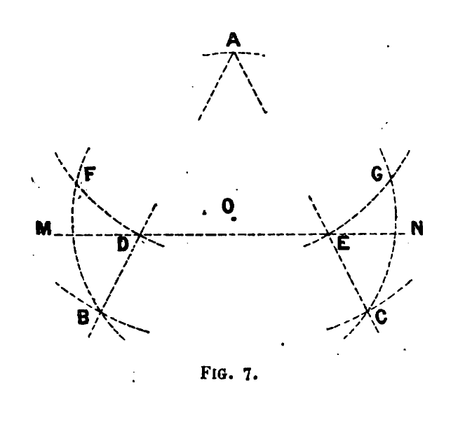

Problème XXXV : Moyenne proportionnelle entre deux longueurs¶
Émile Lemoine — La Géométrographie (Texte français de référence, pp. 24–27, fols. 0040–0043)
XXXV. — Construire la moyenne proportionnelle entre deux droites données \(M\) et \(N\), \(X^2 = M \cdot N\).
Employons d’abord les deux solutions classiques, cependant en faisant les économies possibles de tracé que suggèrent notre méthode.
La première fondée sur la proposition : Dans un triangle rectangle, la perpendiculaire abaissée du sommet de l’angle droit sur l’hypoténuse est moyenne proportionnelle entre les deux segments de l’hypoténuse ;
La seconde sur : La longueur de la tangente menée d’un point \(A\) à un cercle est moyenne proportionnelle entre les distances du point \(A\) aux points \(B\) et \(C\) où une sécante menée par \(A\) coupe le cercle.
a) Je trace une ligne \(AB\) sur laquelle je prends \(AB = M\), \(BC = N\) \(\mathrm{op.} : (R_2 + 5C_1 + C_2 + 2C_3)\), soit \(AB > BC\). Je décris un cercle sur \(AC\) comme diamètre en utilisant pour prendre le milieu \(O\) de \(AC\) la circonférence \(A(M)\) tracée pour avoir \(B\), ce qui fait une économie de \(\mathrm{op.} : (C_1 + C_3)\), il reste \(\mathrm{op.} : (2R_1 + R_2 + 3C_1 + 2C_3)\).
Au point \(B\), j’élève une perpendiculaire sur \(AC\) qui coupe \(O(OC)\) en \(D\) ; je l’obtiens par le symbole \(\mathrm{op.} : (2R_1 + R_2 + 2C_1 + 2C_3)\), si j’ai eu soin, en traçant \(B(N)\) pour placer \(C\), de marquer le second point \(C'\) où \(B(N)\) coupe \(AC\). \(DB\) est la moyenne proportionnelle cherchée.
\(\mathrm{Op.} : (4R_1 + 3R_2 + 10C_1 + C_2 + 6C_3)\) ; simplicité 24 ; exactitude 15 ; 3 droites, 6 cercles.
b) Je trace une ligne \(AB\) sur laquelle je prends \(AC = N\), \(AB = M\) \(\mathrm{op.} : (R_2 + 5C_1 + C_2 + 2C_3)\).
Je décris sur \(CB\) comme diamètre une circonférence en utilisant pour trouver le milieu de \(CB\) la circonférence \(A(M)\) tracée pour trouver \(B\) ; soit \(O\) le milieu de \(CB\) \(\mathrm{op.} : (2R_1 + R_2 + 3C_1 + 2C_3)\).
Sur \(AO\) comme diamètre, je décris une circonférence qui coupe \(O(OC)\) en \(D\) \(\mathrm{op.} : (2R_1 + R_2 + 4C_1 + 3C_3)\).
f. 0041 · p. 25\(AD\), qu’on n’a pas besoin de tracer, est la moyenne proportionnelle cherchée.
\(\mathrm{Op.} : (4R_1 + 3R_2 + 12C_1 + C_2 + 7C_3)\) ; simplicité 27 ; exactitude 17 ; 3 droites, 7 cercles.
NOTE. — Si j’emploie deux compas, je puis économiser \(\mathrm{op.} : (C_1 + C_3)\) en me servant, pour trouver le milieu de \(AO\), de la circonférence \(A(AB)\), et l’on aurait :
\(\mathrm{Op.} : (4R_1 + 3R_2 + 11C_1 + C_2 + 6C_3)\) ; simplicité 25 ; exactitude 16 ; 3 droites, 6 cercles.
Ce qui montre que, au point de vue graphique, contrairement à l’observation faite généralement, les deux solutions classiques \(a\) et \(b\) sont bien près d’être équivalentes (voir Rouché et de Comberousse, Traité de Géométrie, 1re partie, p. 152) ; elles sont d’ailleurs toutes deux très mauvaises, quoique nous les ayions simplifiées par des économies de lignes. Voici la meilleure que je connaisse :
c) Soit toujours \(M\) la plus grande des deux lignes \(M\) et \(N\), je trace une droite \(AB\) quelconque \(\mathrm{op.} : (R_2)\).
Je trace \(A(M)\), \(A\) étant un point quelconque sur \(AB\), \(\mathrm{op.} : (2C_1 + C_2 + C_3)\).
\(A(M)\) coupe \(AB\) en \(B\) ; je trace \(B(N)\) qui coupe \(BA\) en \(C\) entre \(B\) et \(A\) ; je trace \(C(N)\) qui coupe \(B(N)\) en \(P\) et \(Q\) \(\mathrm{op.} : (4C_1 + 2C_3)\).
Je trace \(PQ\) qui coupe \(A(M)\) en \(H\) \(\mathrm{op.} : (2R_1 + R_2)\).
\(BH\) est la droite cherchée.
\(\mathrm{Op.} : (2R_1 + 2R_2 + 6C_1 + C_2 + 3C_3)\) ; simplicité 14 ; exactitude 9 ; 2 droites, 3 cercles.
c1) On peut aussi opérer ainsi :
D’un point quelconque \(C\) je trace \(C(M)\).
Je trace un rayon quelconque \(CB\) qui coupe \(C(M)\) en \(B\) \(\mathrm{op.} : (R_1 + R_2 + 2C_1 + C_3)\).
Je décris \(B(N)\) qui coupe \(BC\) en \(K\), entre \(B\) et \(C\) ; je trace \(K(N)\) qui coupe \(B(N)\) en \(P\) et en \(Q\) \(\mathrm{op.} : (4C_1 + 2C_3)\).
Je trace \(PQ\) qui coupe \(C(M)\) en \(A\) \(\mathrm{op.} : (2R_1 + R_2)\).
\(AK\) ou \(AB\) est la moyenne proportionnelle cherchée, car les deux triangles isocèles \(ACB\), \(BAK\) sont semblables et ont \(AB\) côté commun.
\(\mathrm{Op.} : (3R_1 + 2R_2 + 6C_1 + 3C_3)\) ; simplicité 14 ; exactitude 9 ; 2 droites, 3 cercles.
On ne peut dire que cette méthode de construire une moyenne proportionnelle soit foncièrement nouvelle, car, à une très légère modification graphique près, qui donne 14 au lieu de 15 comme simplicité, on la trouve (N. A., 1857, p. 125), sous le nom de M. Edm.-Aug. Gouzy, de Lausanne, mais énoncée sans commentaire qui en fasse ressortir l’extrême simplicité.
f. 0042 · p. 26Son symbole, en exécutant l’opération dans l’ordre où l’énoncé de M. Gouzy l’indique, est : \(\mathrm{op.} : (R_2 + 8C_1 + C_2 + 5C_3)\), ce qui est la moitié de ce que serait l’opération classique exécutée, comme on le fait ordinairement, sans les simplifications que nous avons faites, suggérées par l’idée systématique de simplification. On n’avait du reste aucun critérium positif de la simplicité ; depuis quelques années on a signalé cette construction dans les journaux de l’enseignement et quelques professeurs l’ont indiquée dans leurs cours, toutefois sans dire qu’elle devait remplacer les constructions \(a\) et \(b\).
Je ne suis pas familiarisé avec les méthodes de la statique graphique, mais je crois que la théorie de la Simplicité et de l’Exactitude des constructions y trouvera une large application. (C’est aussi la construction de M. Gouzy qui se trouve indiquée dans les Leçons de Statique graphique de M. A. Favaro, traduction Terrier, deuxième partie, p. 68, 1885.)
Voici deux autres solutions simples — moins simples cependant que \(c\) ou \(c_1\) — du même problème :
d) Je trace (fig. 6) un cercle quelconque d’un rayon OB tel que \(OB > \frac{M}{2}\) et j’y trace la corde BC égale à \(M\) \(\mathrm{op.} : (2R_1 + R_2 + 2C_1 + C_2 + 2C_3)\).
Sur BC je prends \(BK = N\) ; K étant entre B et C \(\mathrm{op.} : (3C_1 + C_3)\).
De K j’abaisse une perpendiculaire sur OB, sans que OB soit tracé, en me servant du cercle BN déjà tracé pour avoir K \(\mathrm{op.} : (2R_1 + R_2 + 2C_1 + C_3)\).
Cette perpendiculaire coupe en A le cercle OOB.
AB est la moyenne proportionnelle cherchée.
\(\mathrm{Op.} : (4R_1 + 2R_2 + 7C_1 + C_2 + 4C_3)\) ; simplicité 18 ; exactitude 12 ; 2 droites, 4 cercles.

d1) On peut aussi tracer \(BK = N\) comme corde d’un cercle de rayon suffisant et de centre \(O\) quelconque \(\mathrm{op.} : (2R_1 + R_2 + 2C_1 + 2C_3)\).
Puis prendre \(BC = M\) ; \(C\) étant sur \(BK\) dans le sens \(BK\) \(\mathrm{op.} : (3C_1 + C_3)\).
Puis de \(C\) abaisser, sans tracer \(OB\), une perpendiculaire sur \(OB\) qui coupe le cercle \(O(OB)\) en \(A\) \(\mathrm{op.} : 2R_1 + R_2 + 2C_1 + C_3\).
\(AB\) est la droite cherchée parce que les deux triangles \(BCA\), \(BKA\) sont semblables et ont le côté \(BA\) commun.
d) et d1) ont le même symbole.
e) Je signalerai encore la construction élégante que vient d’indiquer M. Léon Colette (Mathesis, p. 192, 1892).
f. 0043 · p. 27Je trace (fig. 7) un cercle quelconque OOA, \(OA\) étant plus grand que \(M\).
De A, point quelconque de ce cercle comme centre, je trace \(A(M)\) qui coupe OOA en B et en C, puis \(A(N)\) qui coupe OOA en F et en G ; les points F, B, C, G se succédant dans cet ordre, \(F, B, C, G\) \(\mathrm{op.} : (5C_1 + C_2 + 3C_3)\).
Traçons AB, AC qui rencontrent \(A(N)\) en D et en E ; puis DE \(\mathrm{op.} : (6R_1 + 3R_2)\) qui rencontre OOA en M ; AM est la moyenne cherchée.
\(\mathrm{Op.} : (6R_1 + R_2 + 5C_1 + C_2 + 3C_3)\) ; simplicité 18 ; exactitude 12 ; 3 droites, 3 cercles.

